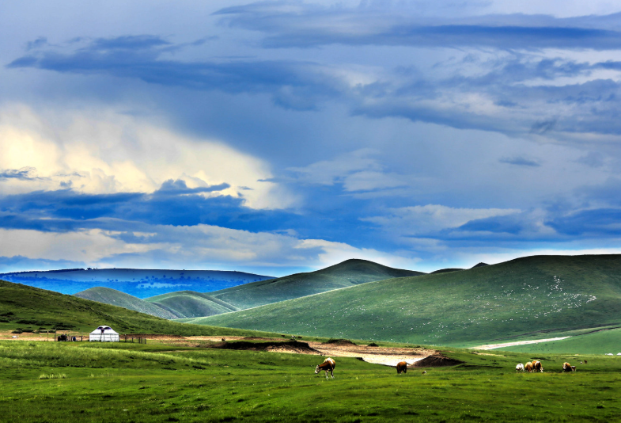
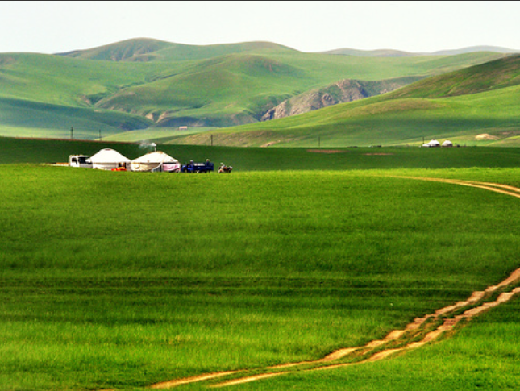

赤峰文旅
🕐 最佳季节：6-10月
🌡️ 夏季均温：20°C
🧥 早晚温差大备外套
📸 日出日落最出片

贡格尔草原位于赤峰市克什克腾旗西部，是内蒙古最美的草原之一。这里水草丰美、河流蜿蜒，是典型的温带草原生态系统。相比乌兰布统的热闹，贡格尔草原更为宁静原始，是深度体验草原风情的绝佳去处。
夏季金莲花、芍药花、马兰花竞相绽放，五彩缤纷。贡格尔河蜿蜒流淌，滋养着两岸的牧场。成群的牛羊如珍珠般散落在绿色的地毯上，牧人的蒙古包升起袅袅炊烟，构成一幅天然的水彩画卷。
在这里可以真正体验蒙古族牧民的生活方式——住蒙古包、挤牛奶、做奶豆腐、骑马放牧。夜晚围着篝火听草原老人讲述古老传说，仰望无光污染的璀璨星空，感受天地辽阔的宁静与壮美。


